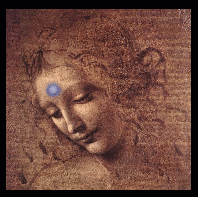
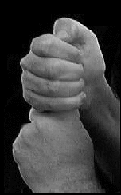
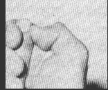
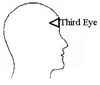

3. Breathe in through your nose and on the exhale vibrate "THAUM."
Click Here for THAUM Mp3 Audio
4. Do the above 4 times in a row and then relax.
Just close your eyes and "look" at the 3rd eye in the middle of your forehead. It is
important to relax and not to strain your eye muscles, even though your eyes are
closed. At first, there is usually just blackness depending on how active your 3rd
eye is, then possibly swirling colors and shapes like a kaleidoscope. Like scrying
into a mirror, the colors and shapes will give way to images when you do the
meditation long enough and regularly. Remember to keep your gaze soft and
relaxed. Feeling pressure here or a knot is normal after the above exercise is
completed. This usually diminishes in time.
WHAT YOU CAN EXPECT:
1. One of the first experiences is a headache or pressure in the center of the
forehead. This sensation may also feel like it is originating from within, usually an
inch or more beneath the surface of the forehead as it affects the sixth chakra.
This is a positive indication the pineal gland is awakening and beginning to
function in a healthy manner.
*Some people can experience a migraine lasting several hours. The severity of
the side effects will depend on how atrophied your pineal gland is to begin with.
Artwork: "Female Head [La Scapigliata]" by Leonardo da Vinci, 1508

This exercise is done with a specific tone and chant.
You need to do this exercise for 4 days in a row.
Regular meditation on the third eye should follow to
completely open it up and establish an energy uptake.
This exercise only gets it going. Further work is needed
and must be consistent to reap maximum results.
Note: Steps 1 and 2 are optional. Steps 3-7 are necessary.

1. Sit with your back straight.
2. Place your hands in the position as shown in the photo. Your for people who are right handed, your right hand should make a fist around your left index finger; for people who are left-handed, your left hand should make a fist around your right index finger. The thumbnail should press on the side of the finger as shown, at the spot where the cuticle ends.

When you feel a very faint electrical shock, you will know you have the correct spot. Don't get discouraged if you cannot find it. It should be apparent in those who have naturally stronger auras. What this does is redirect the flow of energy to the third eye.
This mudra can be used at any time during regular meditation on the third eye. Keep this position throughout the meditation.
*NOTE: THIS HAND POSITION IS OPTIONAL. THE REST OF THE STEPS 3 - 7 ARE NECESSARY
Exhale slowly through your mouth and vibrate:
TH-TH-TH-AH-AH-AH-U-U-U-M-M-M in one long exhale (vibrate the sound one
time per exhale.
Now this is important.
Your tongue will be vibrating, touching your two front teeth, as with the American English word "THIS". It may take a few seconds to adjust this to where you feel it in the middle of your forehead (3rd eye), don’t
worry, just keep on going. Focus the THAUM so you can feel it vibrating on the middle of your forehead, where your Third Eye is located. This can take some time. Just do the best you can. You may have to try as
many as ten to fifteen times or more to get it right.
 5. Now, align your third eye correctly by visualizing it point
end facing inside as illustrated at left. The color of the third eye is brilliant white, like a miniature sun.
6. It is very important the above exercise be done for FOUR consecutive days, preferably 24 hours apart. Then it is a done deal and you will have performed the initial step of opening and activating your third eye.
7. After you are finished, it is important to meditate on your third eye to get the
energy flowing, this way it will fully open.
You may also find you can feel this ache or pressure whenever you focus your
attention on your third eye or meditate on your third eye. This is perfectly normal
and eases with time.
BACK TO MAIN POWER MEDITATION PAGE
© Copyright 2005, 2007, Joy of Satan Ministries;
Library of Congress Number: 12-16457